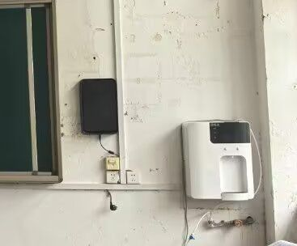
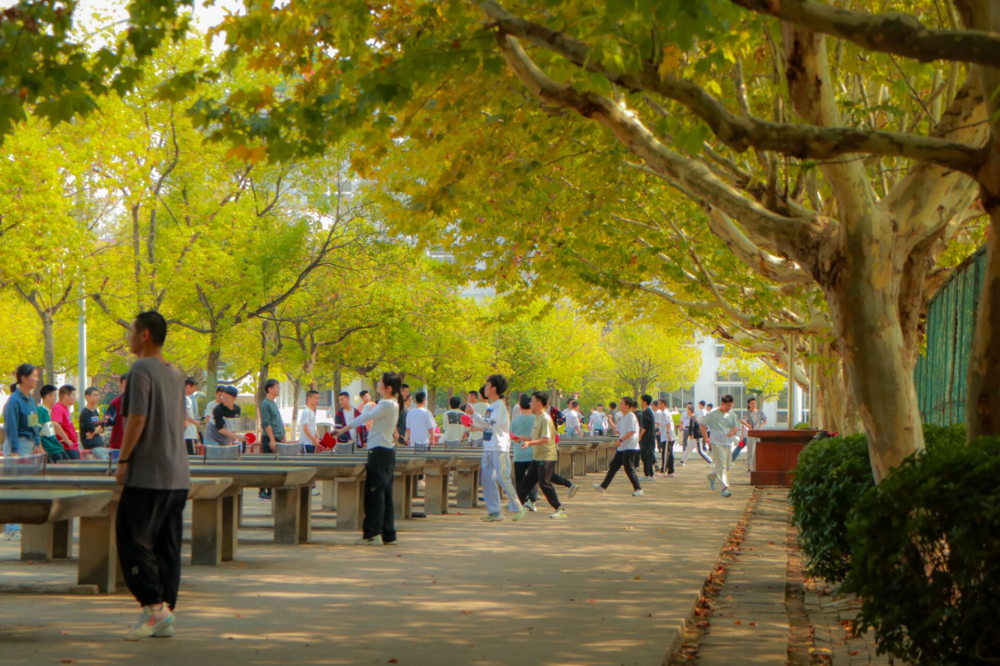
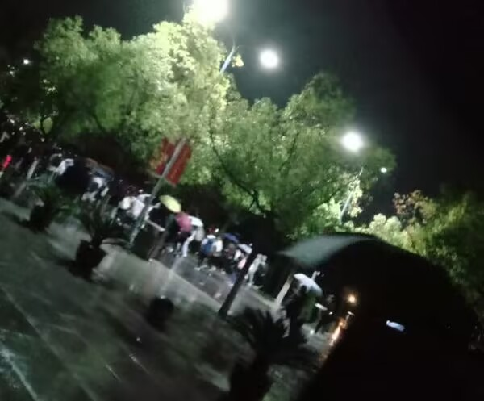

<!-- <!DOCTYPE html>
<html lang="en">
<head>
    <meta charset="UTF-8">
    <meta name="viewport" content="width=device-width, initial-scale=1.0">
    <title>Document</title>
    <style>
h1{
    text-align: center;
    color: brown;
    font-style: italic;
}
.left{
    text-align: left;
}
.right{
    text-align: end;
}
.center{
    text-align: center;
    font-size: larger;
}
    </style>
</head>
<body>
    <h1>WELCOME</h1>
    <hr>
    <div style="display: flex; justify-content: space-between; align-items: center; width: 100%;">
    
</div>
<div class="center">
    <strong>时间本没有治愈性，却让我们在不知不觉中与过去和解</strong>
</div>
<div class="center">
    <strong>原谅过去的时光，原谅过去的挫折，原谅过去的自己</strong>
</div>
<div class="center">
    <strong>晨光爬过教学楼的窗，课本翻到带着墨香的篇章</strong> 
<br>
</div>
    <div class="center">
        <strong>走廊上的嬉戏声打破寂静，晨光下同学们的影子被拉长</strong>
        <br>
    </div>
    </div>
    <div class="center">
        <strong>上课时等不到的钟声，窗户旁落在脸上的夕阳</strong>

    </div>
    <div class="center">
        <strong>过去的时光终已凝练为深沉的回响</strong>
    </div>
    <div class="center">
        <strong>重回旧地，或有些遗憾，却也让其更加难忘</strong>
        <br>
    </div>
    <div class="center">
        <strong>当钟声再一次想起，当微风再一次拂过</strong>
    </div>
    <div class="center">
        <strong>会有人从教室冲出来，当然那不是我</strong>
        <br>
    </div>
    <div class="center">
        <strong>但是，那不是我吗？</strong>
         <br>
         <br>
    </div>
    <br>
    
         <h1 class="left">To yjq</h1>
         <p> 感觉声音好奇怪，视频慎看内容大致是柯南要完蛋了不发没机会了，虽然现在可能没什么意义，但是当一件事足够重要，管他的做就对了，我没资格要你原谅之前的不稳定和双标，不过总该会成长的，我不会轻易让决绝发生，别那么快忘了</p>
    <div class="center"><video  src="./278e5a8f7d7eb0022f5c99b64e9948cf.mp4" height="300"></video>
    </div><hr>
         <div class="right">made by shi yi qin</div>
</body> -->
<!DOCTYPE html>
<html lang="zh-CN">
<head>
    <meta charset="UTF-8">
    <meta name="viewport" content="width=device-width, initial-scale=1.0">
    <title>Document</title>
    <style>
        * { margin: 0; padding: 0; box-sizing: border-box; }
        body { overflow: hidden; background: #000; font-family: "Microsoft Yahei", sans-serif; }
        canvas { display: block; }
        #textCanvas { position: fixed; top: 0; left: 0; width: 100vw; height: 100vh; pointer-events: none; z-index: 10; }
    </style>
</head>
<body>
    <canvas id="c"></canvas>
    <canvas id="textCanvas"></canvas>

    <script>
        // ====================== 代码雨背景 ======================
        const bgCanvas = document.getElementById('c');
        const bgCtx = bgCanvas.getContext('2d');
        let columns, drops = [];
        const fontSize = 16;
        const chars = "严佳琴HappyBirthday🎂🎉01";
        let isRainActive = false;

        function initBg() {
            bgCanvas.width = window.innerWidth;
            bgCanvas.height = window.innerHeight;
            columns = Math.floor(bgCanvas.width / fontSize);
            drops = Array(columns).fill(0).map(() => Math.random() * bgCanvas.height);
        }

        function drawRain() {
            // 如果不需要背景了，直接不绘制，让CSS的黑色背景透出来
            if (!isRainActive) {
                // 这里做一个简单的淡出效果，如果想瞬间黑屏，可以直接 return
                bgCtx.fillStyle = "rgba(0, 0, 0, 0.1)"; 
                bgCtx.fillRect(0,0,bgCanvas.width,bgCanvas.height);
                return;
            }

            bgCtx.fillStyle = "rgba(0,0,0,0.08)";
            bgCtx.fillRect(0,0,bgCanvas.width,bgCanvas.height);
            bgCtx.fillStyle = "#ff69b4";
            bgCtx.font = fontSize + "px monospace";
            for (let i = 0; i < columns; i++) {
                let t = chars[Math.floor(Math.random() * chars.length)];
                bgCtx.fillText(t, i * fontSize, drops[i] * fontSize);
                if (drops[i] * fontSize > bgCanvas.height && Math.random() > 0.975) drops[i] = 0;
                drops[i]++;
            }
        }

        // ====================== 文字与蛋糕前景 ======================
        const txCanvas = document.getElementById('textCanvas');
        const txCtx = txCanvas.getContext('2d');
        let particles = [];
        let textState = "form";
        let textIndex = 0;
        let cakeYOffset = 0;

        const countdowns = ["准备好了吗","3", "2", "1"];
        const blessings = [
            "生日快乐",
            "祝你",
            "好运+1",
            "快乐+1",
            "愿望+1",
            "还有还有",
            "好友+1"
        ];

        const finalText = `佳琴，很高兴认识你，真的，
虽然有很长很长的一段插曲。
说实话，其实我一直都没有改变过想法
其实当时只是感觉关系有点没那么好了所以急了，
不然说实话我当时和你吵的就很奇怪，
因为有的事和我没什么关系。
但确实让你伤心了还是很抱歉
虽然现在说没什么意义，不过既然发生了就有它的意义吧，
就比如让我现在更加想和好，更加想坚持
而且不觉得时隔两年再和好有点说法吗。
不过还是要看你就是了。
今天应该是我知道开始你的第三个生日了吧，
希望下一个三年，下下个我都在，
生日快乐`;

        let currentMode = "countdown";
        let blessingIndex = 0;
        
        // 新增：控制文字淡出的变量
        let textOpacity = 1; 
        let isFadingOut = false;

        function resizeTx() {
            txCanvas.width = window.innerWidth;
            txCanvas.height = window.innerHeight;
        }

        function createParticlesFromText(text) {
            particles = [];
            txCtx.clearRect(0, 0, txCanvas.width, txCanvas.height);
            txCtx.fillStyle = "#ff69b4";
            txCtx.font = "bold 100px Microsoft Yahei";
            txCtx.textAlign = "center";
            txCtx.fillText(text, txCanvas.width / 2, txCanvas.height / 2);

            const imgData = txCtx.getImageData(0, 0, txCanvas.width, txCanvas.height);
            const data = imgData.data;
            txCtx.clearRect(0, 0, txCanvas.width, txCanvas.height);

            for (let x = 0; x < txCanvas.width; x += 6) {
                for (let y = 0; y < txCanvas.height; y += 6) {
                    const i = (y * txCanvas.width + x) * 4;
                    if (data[i + 3] > 128) {
                        particles.push({
                            x: x, y: y, ox: x, oy: y,
                            vx: (Math.random() - 0.5) * 20,
                            vy: (Math.random() - 0.5) * 20,
                            a: 1
                        });
                    }
                }
            }
        }

        function drawCake() {
            const cx = txCanvas.width / 2;
            const cy = txCanvas.height / 2 + 80;
            cakeYOffset = Math.sin(Date.now() / 300) * 10;

            txCtx.save();
            txCtx.translate(cx, cy + cakeYOffset);

            txCtx.fillStyle = "#8B4513";
            txCtx.beginPath();
            txCtx.roundRect(-300, 0, 600, 200, 30);
            txCtx.fill();
            txCtx.fillStyle = "#65330E";
            txCtx.fillRect(-290, 30, 580, 170);

            txCtx.fillStyle = "#FF69B4";
            txCtx.beginPath();
            txCtx.roundRect(-220, -180, 440, 180, 25);
            txCtx.fill();
            txCtx.fillStyle = "#C71585";
            txCtx.fillRect(-210, -150, 420, 150);

            txCtx.fillStyle = "#FFF0F5";
            txCtx.beginPath();
            txCtx.roundRect(-140, -340, 280, 160, 20);
            txCtx.fill();
            txCtx.fillStyle = "#FFB6C1";
            txCtx.fillRect(-130, -310, 260, 130);

            txCtx.fillStyle = "#FFF";
            txCtx.beginPath();
            txCtx.ellipse(0, -340, 150, 30, 0, 0, Math.PI * 2);
            txCtx.fill();
            for (let i = -120; i <= 120; i += 40) {
                txCtx.beginPath();
                txCtx.arc(i, -320, 16, 0, Math.PI * 2);
                txCtx.fill();
            }

            txCtx.beginPath();
            txCtx.ellipse(0, -180, 230, 30, 0, 0, Math.PI * 2);
            txCtx.fill();
            for (let i = -200; i <= 200; i += 50) {
                txCtx.beginPath();
                txCtx.arc(i, -160, 20, 0, Math.PI * 2);
                txCtx.fill();
            }

            txCtx.fillStyle = "#FFD700";
            txCtx.fillRect(-25, -520, 50, 180);
            txCtx.fillStyle = "#FFF";
            txCtx.fillRect(-25, -500, 50, 8);
            txCtx.fillRect(-25, -460, 50, 8);
            txCtx.fillRect(-25, -420, 50, 8);

            txCtx.shadowColor = "#FF4500";
            txCtx.shadowBlur = 50;
            txCtx.fillStyle = "orange";
            txCtx.beginPath();
            let flicker = Math.random() * 10;
            txCtx.ellipse(0, -560, 25 + flicker, 50 + flicker, 0, 0, Math.PI * 2);
            txCtx.fill();

            txCtx.fillStyle = "#FFF";
            txCtx.beginPath();
            txCtx.ellipse(0, -550, 12, 25, 0, 0, Math.PI * 2);
            txCtx.fill();
            txCtx.shadowBlur = 0;

            txCtx.restore();
        }

        function drawFinalText(text) {
            // 如果正在淡出，减少透明度
            if (isFadingOut) {
                textOpacity -= 0.005; // 控制淡出速度
                if (textOpacity <= 0) {
                    textOpacity = 0;
                    // 彻底结束，停止所有动画
                    isRainActive = false; 
                    txCtx.clearRect(0, 0, txCanvas.width, txCanvas.height);
                    return; 
                }
            }

            txCtx.clearRect(0, 0, txCanvas.width, txCanvas.height);
            txCtx.save(); // 保存状态
            txCtx.globalAlpha = textOpacity; // 应用透明度
            txCtx.fillStyle = "#ff69b4";
            txCtx.font = "bold 32px Microsoft Yahei";
            txCtx.textAlign = "center";
            txCtx.shadowColor = "#ff69b4";
            txCtx.shadowBlur = 10;

            const lines = text.split('\n');
            const lineHeight = 45;
            const startY = (txCanvas.height - (lines.length * lineHeight)) / 2 + 20;

            lines.forEach((line, index) => {
                txCtx.fillText(line, txCanvas.width / 2, startY + (index * lineHeight));
            });

            txCtx.restore(); // 恢复状态
        }

        function drawParticles() {
            if (currentMode === "cake") {
                txCtx.clearRect(0, 0, txCanvas.width, txCanvas.height);
                drawCake();
                return;
            }

            if (currentMode === "final_text") {
                drawFinalText(finalText);
                return;
            }

            txCtx.clearRect(0, 0, txCanvas.width, txCanvas.height);
            txCtx.fillStyle = "#ff69b4";

            for (let p of particles) {
                txCtx.globalAlpha = p.a;
                txCtx.fillRect(p.x, p.y, 3, 3);
                if (textState === "break") {
                    p.x += p.vx;
                    p.y += p.vy;
                    p.a *= 0.94;
                } else {
                    p.x += (p.ox - p.x) * 0.1;
                    p.y += (p.oy - p.y) * 0.1;
                    p.a = 1;
                }
            }
            txCtx.globalAlpha = 1;
        }

        function nextText() {
            if (currentMode === "countdown") {
                if (textIndex >= countdowns.length) {
                    isRainActive = true;
                    currentMode = "blessing";
                    blessingIndex = 0;
                    nextText();
                    return;
                }
                const txt = countdowns[textIndex];
                textIndex++;
                textState = "form";
                createParticlesFromText(txt);
                setTimeout(() => {
                    textState = "break";
                    setTimeout(nextText, 800);
                }, 1000);
            }
            else if (currentMode === "blessing") {
                if (blessingIndex >= blessings.length) {
                    currentMode = "cake";
                    setTimeout(() => {
                        currentMode = "final_text";
                        // 新增：在显示文字 15 秒后开始淡出
                        setTimeout(() => {
                            isFadingOut = true;
                        }, 5000); 
                    }, 1000);
                    return;
                }
                const txt = blessings[blessingIndex];
                blessingIndex++;
                textState = "form";
                createParticlesFromText(txt);
                setTimeout(() => {
                    textState = "break";
                    setTimeout(nextText, 1100);
                }, 1200);
            }
        }

        function loop() {
            drawRain();
            drawParticles();
            requestAnimationFrame(loop);
        }

        window.addEventListener('resize', () => {
            initBg();
            resizeTx();
        });

        initBg();
        resizeTx();
        loop();
        setTimeout(() => {
            nextText();
        }, 500);
    </script>
</body>
</html>